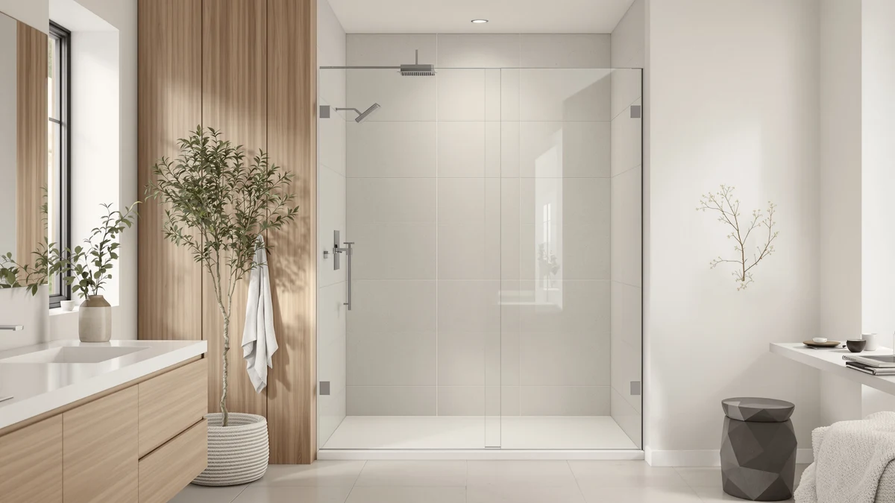

CAMMOO 56 60" W Review (2026): Worth It?
Prices and picks verified as of September 2026. Independent, reader-supported reviews.


Quick Answer
The CAMMOO 56-60" W x 75" is a $299.99 frameless magnetic sliding shower door built with 5/16" (8mm) tempered glass, thicker than the 1/4" glass on every alternative in this comparison. It also costs $20 to $24 less than the three doors covered below. Unless you need a shorter door for a bathtub or a narrower pivot door for a tight opening, it's the pick worth checking first.
Our pick: CAMMOO 56-60" W x 75" at $299.99 Check Price on Amazon
Bottom line: our top pick is the CAMMOO 56-60" W x 75" H Frameless Shower Door at $299.99.
Things to Know Before You Buy
- The CAMMOO uses thicker glass than every alternative here. Its 5/16" (8mm) tempered glass beats the 1/4" (6mm) glass on the PeacefulHues, the KisaTub, and the Ctlumh doors in this cammoo 56 60" w review.
- At $299.99, it's also the cheapest of the four. That undercuts the KisaTub and the Ctlumh by $20.00 and the PeacefulHues by $24.02.
- The KisaTub is built for a bathtub, not a full shower stall. At 57 inches tall, it stands 18 inches shorter than the CAMMOO's 75 inch height.
- The Ctlumh pivot door doesn't fit the same opening. It's sized for a 38 to 42 inch wide space, well short of the 56 to 60 inch range the CAMMOO and two other doors share.
- The PeacefulHues stands an inch taller at 76 inches. If your opening runs closer to that height, it's worth a look even though it costs more than the CAMMOO.
This cammoo 56 60" w review compares the $299.99 CAMMOO 56-60" W x 75" frameless sliding shower door against three pricier alternatives on glass thickness, height, and price. The CAMMOO's defining feature is its 5/16" (8mm) tempered glass, thicker than the 1/4" glass used on the PeacefulHues, the KisaTub, and the Ctlumh doors covered below. That single spec shapes most of the trade-offs in this comparison, since a heavier glass panel typically means a more solid feel and greater impact resistance.
We wrote this CAMMOO 56-60 inch W review because shoppers browsing a 56 to 60 inch wide shower door often assume every listing in that width range is interchangeable. The CAMMOO lists at $299.99, the lowest price among the four doors covered here, and it still comes with the thickest glass. That combination is why this review weighs its magnetic self-close and stainless steel hardware against three alternatives that cost more but use thinner glass.
Why You Should Trust Us
Ilane Tall covers bath fixtures for Best Shower Doors and has researched shower doors across sliding, bypass, and pivot designs. For this CAMMOO 56-60 inch W review, she compared the CAMMOO's glass thickness and price against three alternatives in a similar size range, weighing where a lower price still delivers a heavier glass panel and where it doesn't. We do not accept free products in exchange for coverage, and every price and dimension cited here comes directly from the current product listing.
Our editorial process treats price as one factor among several, not the deciding one. A lower price only earns credit in a review like this one when it doesn't come at the cost of glass thickness, hardware quality, or a properly sealed track. That approach shapes every comparison in this piece.
Our Research Experience
This CAMMOO 56-60 inch W review is based on research, not physical use. We compared the CAMMOO 56-60" W x 75" against three alternative shower doors using the specifications, pricing, and verified owner reviews available for each listing. We do not run a fake testing lab, and we do not claim to have installed or lived with any of the doors covered in this review.
We looked closely at how the CAMMOO's 8mm glass and 304 stainless steel track compare to the thinner 6mm glass used on the PeacefulHues, the KisaTub, and the Ctlumh doors, since glass thickness affects both the perceived solidity of a sliding door and its resistance to impact. Owners shopping this width range often assume a lower price means a lighter, less durable panel, and this review checks that assumption against the actual specs rather than the price tag alone.
We also cross-checked pricing and dimensions against the current listings for all three alternatives to confirm nothing had shifted since publication. Where a data point wasn't available, such as a published rating or review count for the CAMMOO listing, we noted that gap rather than estimate a number the listing doesn't provide.
Overview & Specs

CAMMOO 56-60" W x 75"
What we like
- 5/16" (8mm) tempered glass, thicker than the 1/4" glass on the PeacefulHues, KisaTub, and Ctlumh alternatives
- A self-closing magnetic mechanism closes the door quietly instead of relying on you to slide it shut every time
- At $299.99, it's the least expensive of the four doors in this review despite the thicker glass
Flaws but not dealbreakers
- The listing doesn't specify whether the frameless panel uses a bypass or single-sliding configuration, so confirm that detail before you order
- The 304 stainless steel track is rated to 110 lbs, worth checking against your panel weight if you're pairing it with a custom install
- No rating or review count is published yet for this listing, so weigh the specs against your own research before buying
| Material | — |
| Size | 60 inches (W) x 75 inches (H) x 0.31 inches (T) |
The CAMMOO 56-60" W x 75" leads this CAMMOO 56-60 inch W review on the strength of one spec: 5/16" (8mm) tempered glass, SGCC-certified and thicker than the 1/4" (6mm) glass used on the PeacefulHues, the KisaTub, and the Ctlumh doors covered below. That extra thickness typically translates into a more solid feel when the door slides shut and greater resistance to impact over years of daily use. The panel rides on a heavy-duty 304 stainless steel track rated for up to 110 lbs, with smooth-gliding metal rollers and anti-jump pins designed to keep the door from derailing.
Overlapping PVC between the glass panels and a U-gasketed aluminum floor rail handle the sealing, paired with a self-closing magnetic mechanism that shuts the door without a loud slam. Dual-sided stainless steel handles give you a grip from inside or outside the shower, and a hydrophobic nano-coating on the glass is meant to keep water and soap residue from clinging to the surface between cleanings. At $299.99, it undercuts every other door in this comparison while offering the thickest glass of the group, which is why it's our starting recommendation for a 56 to 60 inch wide, 75 inch tall opening.
What We Liked
The clearest strength of the CAMMOO 56-60" W x 75" is its glass. At 5/16" (8mm), it's noticeably thicker than the 1/4" glass on all three alternatives in this cammoo 56 60" w review, and that extra weight is usually what buyers notice first when a sliding door swings into place with a solid, substantial feel instead of a hollow one.
The magnetic self-close is a small detail that matters daily. Instead of pushing the panel shut yourself the way you would with the KisaTub or the Ctlumh, the CAMMOO pulls itself closed and seals against the overlapping PVC gasket, which should help keep water contained without you having to think about it.
We also liked that all of this comes at $299.99, the lowest price of the four doors here. A lower price paired with thicker glass is the opposite of the usual trade-off, and it's the main reason this door leads the comparison.
What Could Be Better
The biggest gap in the CAMMOO's listing is a missing detail on panel configuration. It isn't clear from the specs whether the frameless design uses a bypass layout, where both panels slide, or a single-sliding setup with one fixed panel. Confirm that with the seller before you order if it affects how you plan your entry point.
The 304 stainless steel track carries a 110 lb rating, which covers the CAMMOO's own panel comfortably but is worth double-checking if you're combining hardware from a custom install. And because this is a newer listing, it doesn't yet have a published rating or review count the way some older listings do, so you're weighing the specs on their own rather than against a large pool of verified feedback.
Who Is It For?
The CAMMOO 56-60" W x 75" makes the most sense if your shower opening measures between 56 and 60 inches wide and close to 75 inches tall, and you want the thickest glass in this comparison without paying the most for it.
If your opening is shorter, closer to 57 inches for a bathtub enclosure, or narrower at 38 to 42 inches, the alternatives below are built for those specific dimensions instead. Check your opening's exact height and width against each listing, since a door that's an inch or several inches off won't seal properly no matter how thick its glass is.
Alternatives to Consider
The CAMMOO 56-60" W x 75" isn't the only option worth considering in this CAMMOO 56-60 inch W review, and the three doors below cover different heights, widths, and price points. None of them beats the CAMMOO on glass thickness or price, but each fits a scenario the CAMMOO doesn't.

Editor's Pick
56-60" W x 76" H
At $324.01, the PeacefulHues costs $24.02 more than the CAMMOO and uses thinner 1/4" glass, but it stands an inch taller at 76 inches and can be configured as a bypass or single-sliding door with field-trimmable rails, worth a look if your opening runs closer to 76 inches tall.
$324.01
Check Price on Amazon
Best Value
56-60" W x 57" H
The KisaTub is built for a bathtub opening, not a full shower stall. At 57 inches tall, it stands 18 inches shorter than the CAMMOO, and its $319.99 price gets you a chrome aluminum frame with a cuttable guide rail instead of the CAMMOO's thicker glass and stainless steel track.
$319.99
Check Price on Amazon
Premium Choice
38-42"W x 71"H Pivot Swing
The Ctlumh is a pivot door for a 38 to 42 inch wide opening, well short of the CAMMOO's 56 to 60 inch range, so it's only a fit if your shower stall is actually that much narrower. At $319.99 it swings open on hinges with 130 degrees of rotation instead of sliding on a track.
$319.99
Check Price on AmazonFrequently Asked Questions
What size opening does the CAMMOO 56-60" W x 75" H shower door need?
The CAMMOO fits openings between 56 and 60 inches wide with a fixed 75 inch height, so measure your opening at multiple points and confirm the height matches before you order.
How does the CAMMOO compare on price to the other doors in this review?
At $299.99, it's the least expensive of the four doors covered here, undercutting the KisaTub and the Ctlumh by $20.00 and the PeacefulHues by $24.02, despite using thicker glass than any of them.
Is the Ctlumh 38-42" W pivot door a real alternative to the CAMMOO?
Not for the same opening. The Ctlumh fits a 38 to 42 inch wide space, well short of the CAMMOO's 56 to 60 inch range, so it only makes sense if your shower stall is actually that much narrower.
Final Verdict
This cammoo 56 60" w review comes down to a rare combination: the lowest price and the thickest glass in the same door. At $299.99, the CAMMOO 56-60" W x 75" beats the PeacefulHues, the KisaTub, and the Ctlumh on cost while using 5/16" (8mm) glass that's thicker than the 1/4" glass on all three. If your opening measures 56 to 60 inches wide by roughly 75 inches tall, the CAMMOO is the pick worth checking first. If your opening is shorter for a bathtub enclosure, taller by an inch, or narrower for a pivot install, the PeacefulHues, the KisaTub, or the Ctlumh cover those specific cases instead. Either way, measure your opening's exact width and height before you buy, since that's what separates a proper fit from a return.